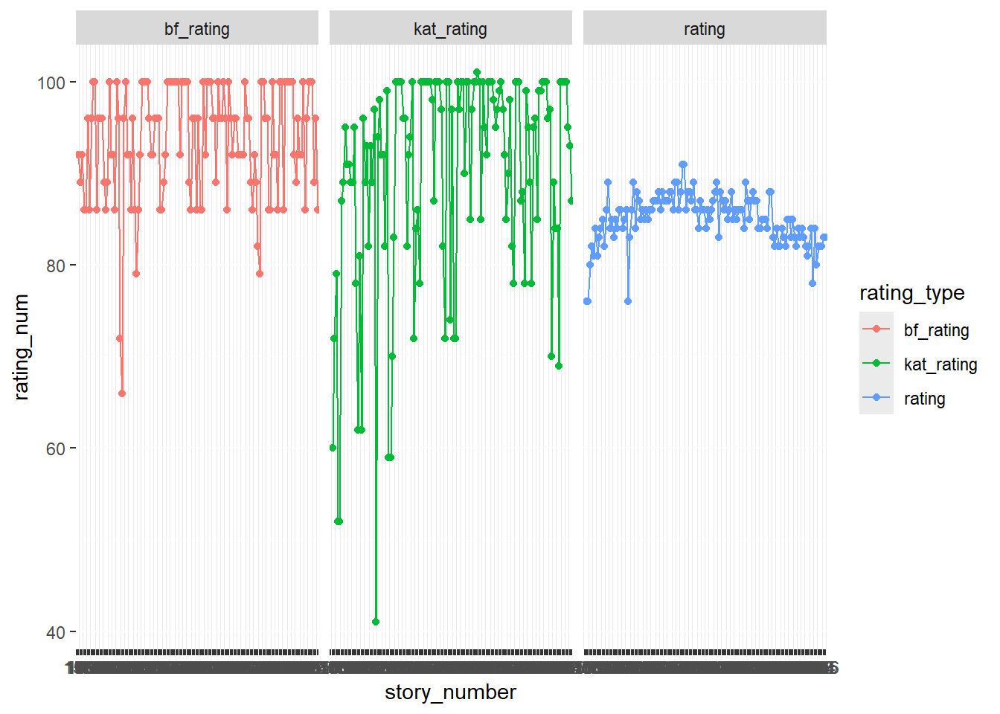
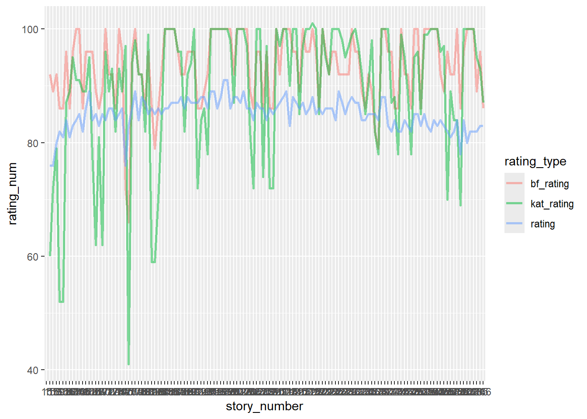
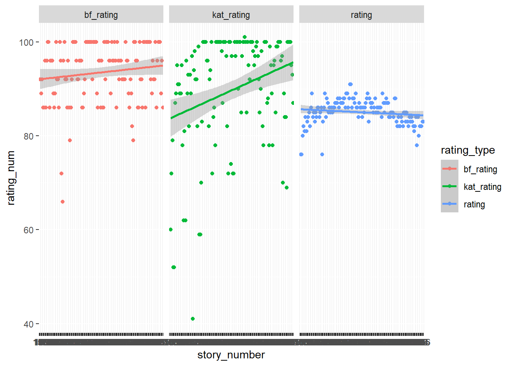
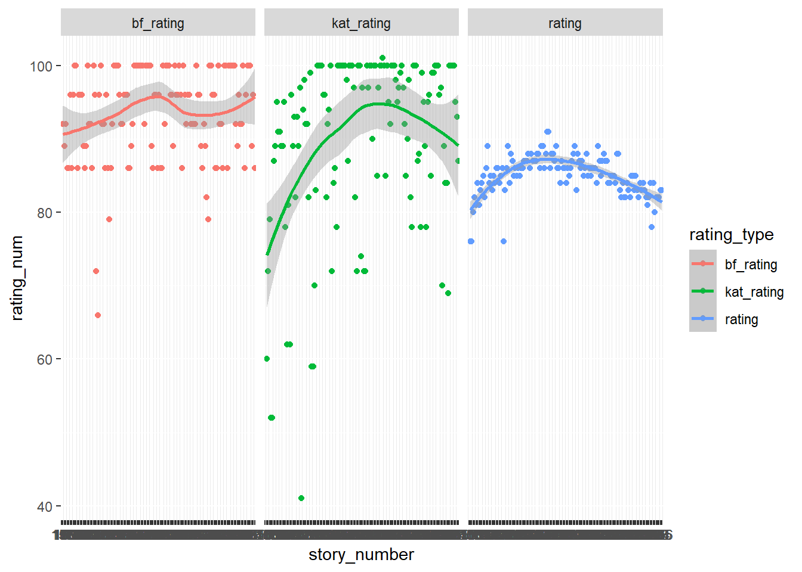
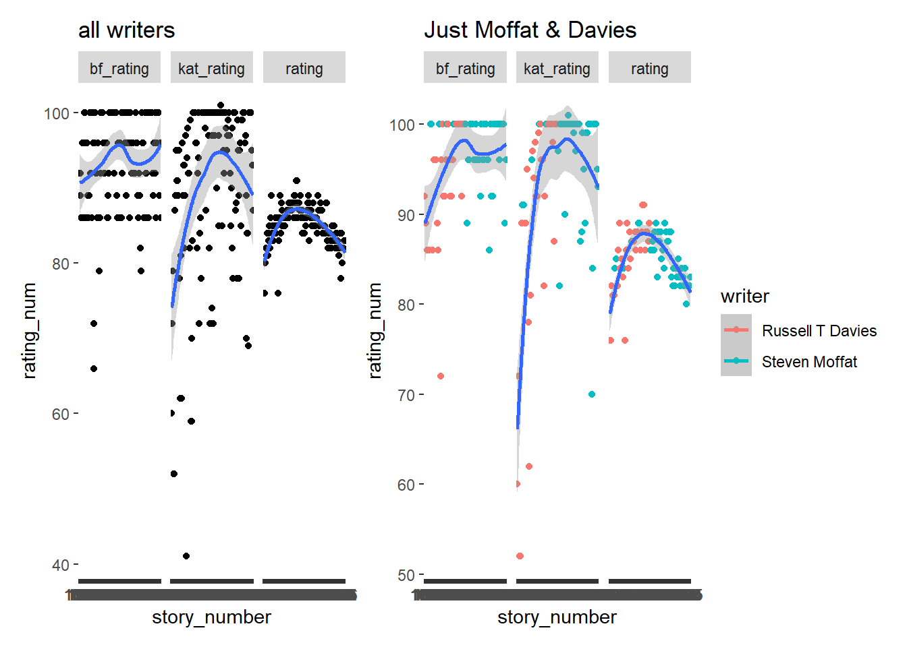
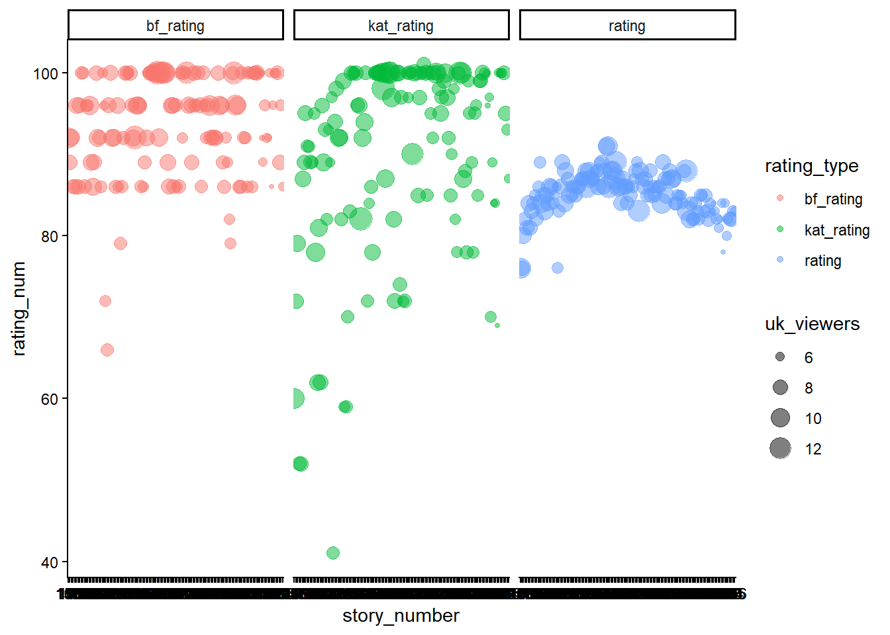

Show code
library(tidyverse)
library(here)
library(maps)
library(mapdata)
library(mapproj)Created on: 2026-10-13
Last updated on: 2026-10-13
library(tidyverse)
library(here)
library(maps)
library(mapdata)
library(mapproj)directors <- readr::read_csv('https://raw.githubusercontent.com/rfordatascience/tidytuesday/main/data/2021/2021-11-23/directors.csv')
episodes <- readr::read_csv('https://raw.githubusercontent.com/rfordatascience/tidytuesday/main/data/2021/2021-11-23/episodes.csv')
writers <- readr::read_csv('https://raw.githubusercontent.com/rfordatascience/tidytuesday/main/data/2021/2021-11-23/writers.csv')
imdb <- readr::read_csv('https://raw.githubusercontent.com/rfordatascience/tidytuesday/main/data/2021/2021-11-23/imdb.csv')
# This dataset has spoilers so I had my partner manually delete the descriptions that had spoilers!
# write_csv(imdb, here("Week_08", "Data", "imdbdata.csv"))
# sf = spoiler free imdb
sf_imdb <- read_csv(here("goodplot-badplot", "Data", "imdbdata.csv"))So what should we investigate? We have the following data:
Episode #
Ratings
Number of people rating
Writers
Directors
Episodes vs specials
Viewer counts
Before we do anything complicated, let’s join these four datasets together. We’ll start with the episodes and add writers and directors to the columns.
episodes |>
full_join(directors, by = "story_number") |>
full_join(writers, by = "story_number") -> drwho_dataThen we need to add the imdb data separately as there is no column for “story number”. There is, however, a date column that we could match. First, I will convert the dates to the correct format:
drwho_data |>
mutate(date_aired = ymd(first_aired)) -> drwho_data2
sf_imdb |>
mutate(date_aired = dmy(air_date)) |>
mutate(imdb_rating = rating) |>
select(c(season:air_date,rating_n:imdb_rating))-> imdb2ok– having issues with merging the data correctly since the dates don’t match up.
Maybe I can do it by season number and episode number?
imdb2’s format has 0’s for specials it looks like.
the other dataset uses NA’s. Let’s set the NA’s to 0’s.
# replace NA's with 0's
drwho_data2 |>
mutate(episode_number = ifelse(is.na(episode_number), 0, episode_number)) -> drwho_data3
# gotta add leading zeroes or else it sorts really weird. source: https://stackoverflow.com/questions/5812493/how-to-add-leading-zeros
drwho_data3 |>
mutate(episode_number = str_pad(episode_number, 2, side = "left", pad = "0", use_width = TRUE)) -> drwho_data4
imdb2 |>
mutate(ep_num = str_pad(ep_num, 2, side = "left", pad = "0", use_width = TRUE)) -> imdb3
# combine the season and episode numbers together with a . in between
drwho_data4 |>
unite(szn_ep_num, season_number, episode_number, sep = ".") -> drwho_data5
imdb3 |>
unite(szn_ep_num, season, ep_num, sep = ".") -> imdb4
#ok we are not keeping imdb4, we will just do drwho_data5 with personal ratings!
write_csv(drwho_data5, here("goodplot-badplot", "Data", "curated_drwho.csv"))
# My partner and I added our own ratings to the file!
rated_curated_drwho <- read.csv(here("goodplot-badplot", "Data", "rated_curated_drwho.csv"))
# converting letters to numbers the absolutely terrible way:
rated_curated_drwho |>
mutate(bf_rating = ifelse(bf_rating == "A+", "100", bf_rating)) |>
mutate(bf_rating = ifelse(bf_rating == "A", "96", bf_rating)) |>
mutate(bf_rating = ifelse(bf_rating == "A-", "92", bf_rating)) |>
mutate(bf_rating = ifelse(bf_rating == "B+", "89", bf_rating)) |>
mutate(bf_rating = ifelse(bf_rating == "B", "86", bf_rating)) |>
mutate(bf_rating = ifelse(bf_rating == "B-", "82", bf_rating)) |>
mutate(bf_rating = ifelse(bf_rating == "C+", "79", bf_rating)) |>
mutate(bf_rating = ifelse(bf_rating == "C", "76", bf_rating)) |>
mutate(bf_rating = ifelse(bf_rating == "C-", "72", bf_rating)) |>
mutate(bf_rating = ifelse(bf_rating == "D+", "69", bf_rating)) |>
mutate(bf_rating = ifelse(bf_rating == "D", "66", bf_rating)) |>
mutate(bf_rating = ifelse(bf_rating == "D-", "62", bf_rating)) |>
mutate(bf_rating = ifelse(bf_rating == "F", "0", bf_rating)) |>
# make my ratings not go over 101
mutate(kat_rating = ifelse(kat_rating >= 101, "101", kat_rating)) |>
filter(bf_rating != "NA") |>
mutate(rating = as.character(rating)) -> wide_final_drwho # adding this to a dataframe so I can use it later
wide_final_drwho |> # pivoting longer for plotting
pivot_longer(cols = c("bf_rating","kat_rating","rating"),
names_to = "rating_type",
values_to = "rating_num") |>
mutate(rating_num = as.integer(rating_num)) -> final_drwhoDavid’s scoring scale:
A+ = 100 A = 96 A- = 92 B+ = 89 B = 86 B- = 82 C+ = 79 C = 76 C- = 72 D+ = 69 D = 66 D- = 62 F = 0
final_drwho |>
ggplot(mapping = aes(x = story_number,
y = rating_num,
group = rating_type,
color = rating_type)) +
geom_point() +
geom_line() +
facet_wrap(~rating_type)
final_drwho |>
ggplot(mapping = aes(x = story_number,
y = rating_num,
group = rating_type,
color = rating_type)) +
geom_line(linewidth = 1, alpha = 0.5)
final_drwho |>
ggplot(mapping = aes(x = story_number,
y = rating_num,
group = rating_type,
color = rating_type)) +
geom_point() +
geom_smooth(method = lm) +
facet_wrap(~rating_type)
final_drwho |>
ggplot(mapping = aes(x = story_number,
y = rating_num,
group = rating_type,
color = rating_type)) +
geom_point() +
geom_smooth() +
facet_wrap(~rating_type)
library(patchwork)
final_drwho |>
filter(writer == "Steven Moffat" | writer == "Russell T Davies") -> showrunners
ggplot(data = final_drwho,
mapping = aes(x = story_number,
y = rating_num,
group = rating_type)) +
geom_point() +
geom_smooth() +
facet_wrap(~rating_type) +
labs(title = "all writers") -> plot1
ggplot(data = showrunners,
mapping = aes(x = story_number,
y = rating_num,
group = rating_type,
color = writer)) +
geom_point() +
geom_smooth() +
facet_wrap(~rating_type) +
labs(title = "Just Moffat & Davies")-> plot2
plot1 + plot2
Average rating per episode bar chart?
Average rating per writer, boxplot containing all of their episodes
#Top Rated Dr. Who episodes plot
# first, group rows to eliminate duplicate episode rows (due to 2 writers/2 directors for some)
wide_final_drwho |>
group_by(episode_title, szn_ep_num, bf_rating,
kat_rating, story_number, type, first_aired,
uk_viewers, rating, production_code, duration) |>
summarise() -> wide_final_drwho_nodupes
#check unique number of episodes to make sure it matches:
length(unique(wide_final_drwho$episode_title))[1] 134length(unique(wide_final_drwho_nodupes$episode_title))[1] 134wide_final_drwho_nodupes |>
pivot_longer(cols = c("bf_rating","kat_rating","rating"),
names_to = "rating_type",
values_to = "rating_num") |>
mutate(rating_num = as.integer(rating_num)) |>
filter(story_number != "")-> long_final_drwho_nodupes
# to plot
long_final_drwho_nodupes |>
ggplot(mapping = aes(x = story_number,
y = rating_num,
group = rating_type,
color = rating_type,
size = uk_viewers)) +
geom_point(alpha = 0.5)+
theme_classic()+
facet_wrap(~rating_type)
long_final_drwho_nodupes |>
separate(szn_ep_num, into = c("season","ep_num"), sep = ".") -> sep_longdrwho_nodupe